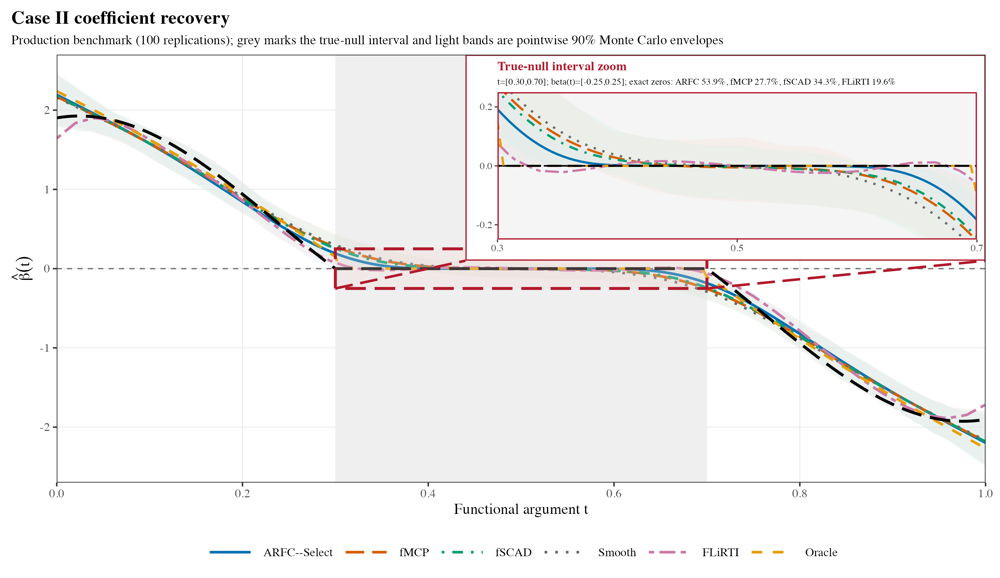
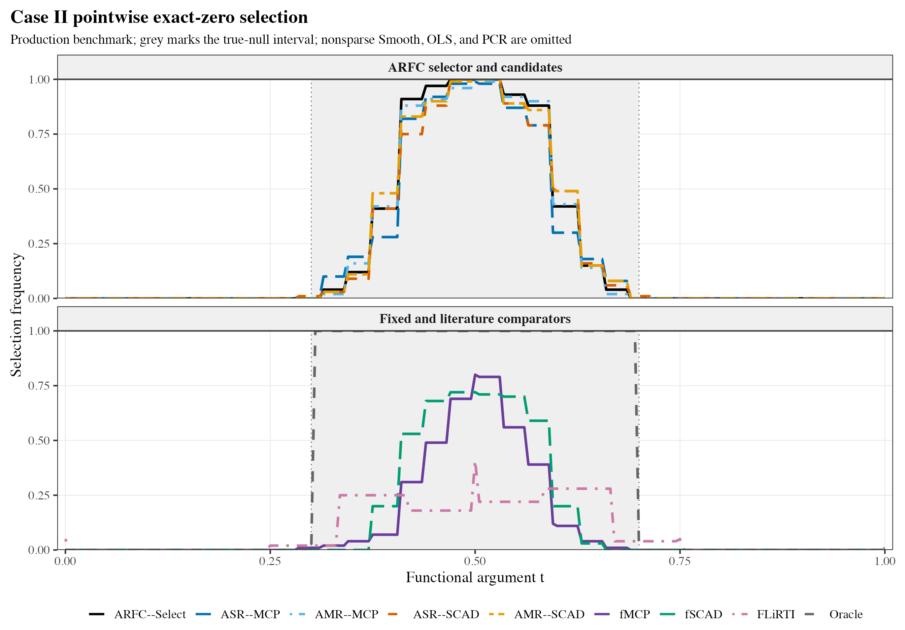
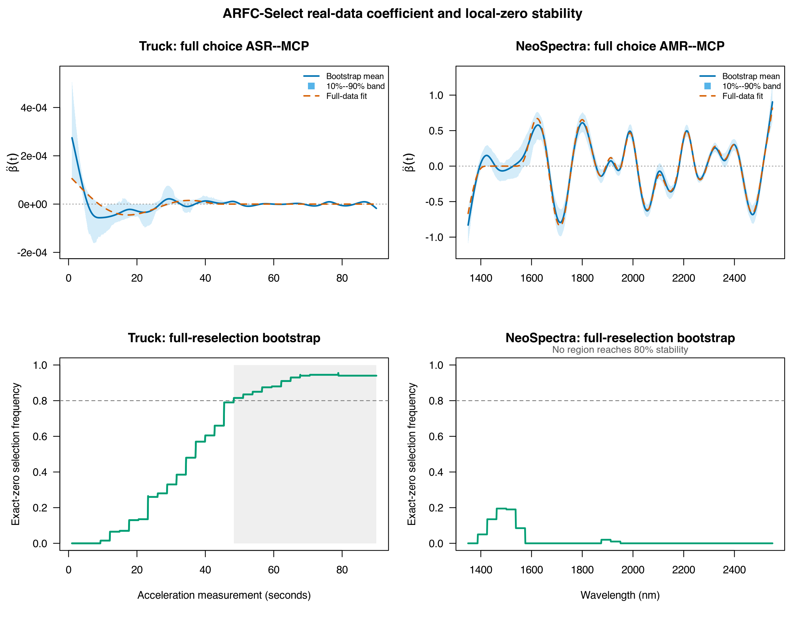

Result gallery: prediction and regional stability
Source:vignettes/results-gallery.Rmd
results-gallery.RmdThe simulations use 100 replications per coefficient case, with 150 training, 150 validation, and 2,000 independent test observations per replication.
A coefficient mean is not a selection frequency

Nearly overlapping mean curves can conceal differences in exact-zero selection. Light bands are pointwise 90% Monte Carlo envelopes, not confidence bands for one observed dataset. ARFC-Select recovered 53.9% of the true-null interval versus 27.7% for fixed fMCP and 34.3% for fixed fSCAD in this design. The comparison is procedural: the selector uses additional independent validation observations while fixed comparators use training-only tuning.

The script simulation/59_refine_arfc_legacy_figures_v8.R
reproduces these figures from the saved simulation results.
Two empirical regimes
Truck identifies a stable late-time zero region, whereas NeoSpectra supports competitive prediction without an 80%-stable zero interval. Structural stability and prediction are different outcomes. Truth is unknown in these applications, so true-zero recovery is not an empirical metric.

The real-data analysis uses 200 complete-reselection bootstrap fits per dataset. The bands use the 10th and 90th percentiles (pointwise 80%), distinct from the simulation envelopes above. Prediction comparison intervals instead resample stored outer-CV prediction records and do not include full retraining uncertainty. See the replication README for figure-generation commands and data attribution.